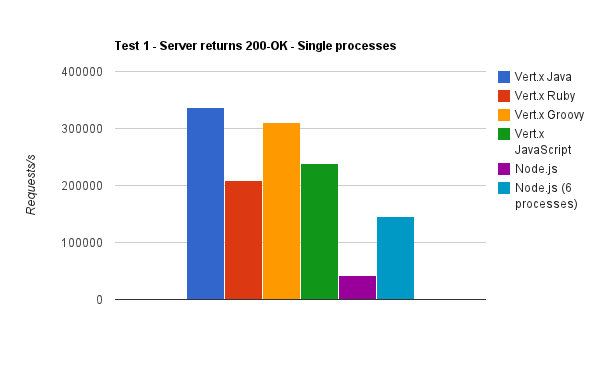

Node.js vs. Vert.x
By Mike Heath & Thomas A. Valletta
Intro
Mike Heath
Thomas A. Valletta
Node.js
JavaScript
is the only language
that runs natively
on the most popular
and prolific virtual
machine of our day:
the Browser.
is the only language
that runs natively
on the most popular
and prolific virtual
machine of our day:
the Browser.
Wednesday,
September 12th 2012
RedMonk published its
programming language
popularity ranking.
September 12th 2012
RedMonk published its
programming language
popularity ranking.
- JavaScript
- Java
- PHP
- Python
- Ruby
- C#
- C++
- C
- Objective-C
- Shell
- Perl
- Scala
- Haskell
- ASP
- Assembly
- ActionScript
- R
- Visual Basic
- CoffeeScript
- Groovy
According to the
Computer Language
Benchmarks Game,
V8 is:
Computer Language
Benchmarks Game,
V8 is:
| Language | V8 speed |
| C | 2.2 times slower |
| Java | 1.4 times slower |
| C# Mono | Same |
| Erlang | 4 times faster |
| Ruby | 14 times faster |
| PHP | 15 times faster |
| Python | 15.5 times faster |
These benchmarks were
achieved using approximately
half the memory and
a third of the code
of Java.
achieved using approximately
half the memory and
a third of the code
of Java.
npm
- 15,802 modules
- 654,524 downloads in 24 hr
- 3,155,813 downloads in 7 days
- 11,638,707 downloads in 30 days
Hello World
console.log('hello');
setInterval(function() {
console.log('world');
}, 1000);
Simple Web Server
var http = require('http');
var s = http.createServer(function(req, res) {
res.writeHead(200, {'content-type': 'text/plain'});
res.end("hello world!");
});
s.listen(8088);
Simple Chat Server
var net = require('net');
var sockets = [];
var s = net.Server(function(socket) {
sockets.push(socket);
socket.on('data', function(d) {
for (var i = 0; i < sockets.length; i++) {
if (sockets[i] == socket) continue;
sockets[i].write(d);
}
});
socket.on('end', function() {
var i = sockets.indexOf(socket);
sockets.splice(i, 1);
});
});
s.listen(8089);
- JavaScript
- V8
- modules
- adoption
- simplicity
Now a little about...
...some other technology whos name I have forgotten
Let's fight!
Reliability
Sample of Apps Running on Private Cloud Foundry Deployment
| Technology | Number of Apps | Number of Servers | Number of crashes over 30 days |
| Ruby on Rails | 12 | 32 | 19 |
| Ruby on Rails (JRuby and Tomcat) | 4 | 20 | 0 |
| Node.js | 6 | 12 | 58 |
*Source: vcap-dev mailing list
Community
Everyone has heard of Node.js, Vert.x sits quietly in its own little corner of the Internet
Performance

Non-blocking code
Everything in Node is non-blocking (except the things that aren't). Good luck finding good non-blocking libraries for Vert.x
Thanks!
Event-driven Architecture
- Scalable alternative to thread-per-connection
- Single thread handles multiple network connections
- Uses reactor pattern for demultiplexing
- Nginx, Twisted, EventMachine, Grizzly, Netty, Node.js, vert.x, etc.